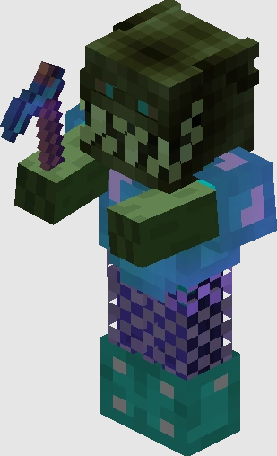
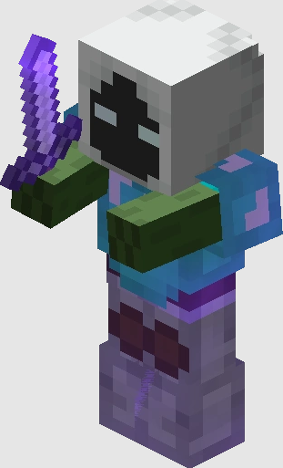
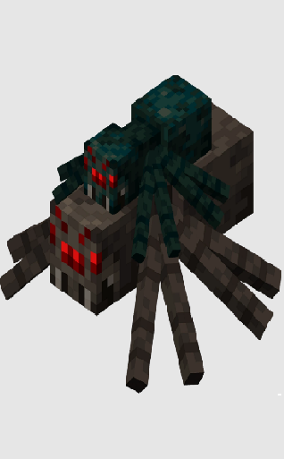
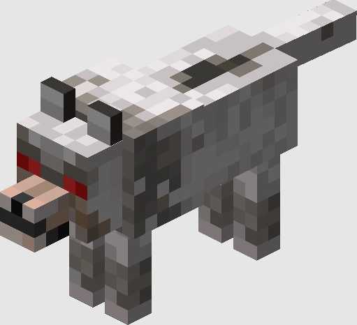
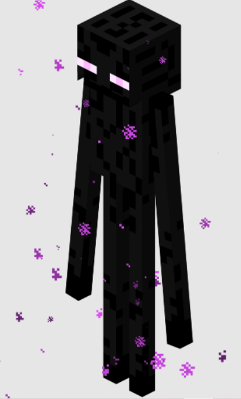
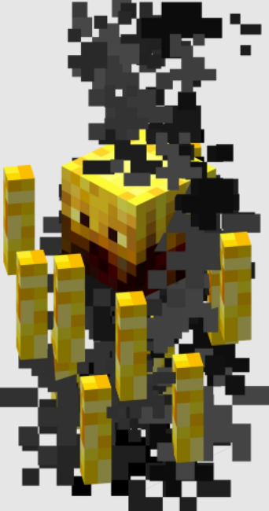

Revenant Horror
The Revenant Horror is a zombie slayer boss. This boss drains health on tier 1, gets the ability to do an aoe(area of affect) attack every second and decreases armour by 25%, tier 3s get the ability to go into an enraged form once in awhile, while enraged the revenant does more damage.
Tier 1s to tier 3s are easy, but if you are struggling get a revenant falchion and a healing wand and one of the dragon armors for tier 3s.
For tier 4s, shadow assassin and a reaper falchion are recomended. If you still cant do tier 4s get a wand healing wand, a tiger, blue whale, or a baby yeti pet, and a healing orb (wolf slayer)
|

Atoned Horror
Atoned Horrors are tier 5 revenant horrors. For now it's the only slayer with a tier 5. This boss is entirely diffrent from the other tiers because it doesnt have the abilities other tiers have, it has new abilities.
This boss has powerfull abilities like, healing rapidly, constantly throws tnt, and charges an explosion that can instantly kill you if you get to close.
Against this boss it is recomended to get late to endgame gear. Necron with a tarantula helmet or reaper armor with a reaper mask is recomended. Also use a reaper falchion that has the one for all enchant. If you are still dying get the best healing wand, the wand of attonment.
|

Tarantula Broodfather
The tarantula slayer is just like zombie slayer but with a smaller boss. The only reason most people do this slayer is to get a tarantula helmet and to get auto slayer.
The gear for this boss is almost the same as the revenants but a reaper falchion wont do much because the 200% damage ability only affects undead creatures. There are no good weapons that are specificly for spider slayer until spider slayer 7. So just use any weapon like a flower of truth or a livid dagger.
|

Sven Packmaster
The sven packmaster is the strongest of the first 3 slayers because of its abilities, such as true damage which is damage that ignores defense, calling reinforcements when below half health, and is very small and fast so its hard to hit.
However this boss has a big weakness, water. When this boss gets in water, it becomes slower than your grandma.
At the start just use anything you have and if you are struggling with tier 3s and tier 4s, use mastiff armor or 3/4 shadow assassin armor with a zombie knight chestplate. Sorrow armor is really good for sven because it gives the most true defense out of any armor in game.
|

Voidgloom Seraph
This boss is as dangerous as taping knives to a ceiling fan. A tier 1 has a hits phase where you have to hit it a certain amount of times. Ferocity does help but it decreases it by 75%. A tier 1 voidgloom requires the gear you need for most tier 4s such as, 3/4 shadow assassin with a tarantula helmet, a wand of mending or restoration, and any weapon because it doesnt have high health.
The main reason people do this slayer is to get to enderman slayer 3 so they can use a juju bow. You can either to 50 tier 1s or try to do tier 2s instead. But don't do tier 2s if its for a juju bow.
Tier 2s get the ability to throw a yang glyph require alot more powerfull gear such as, 3/4 necron with tarantula helmet or reaper mask and a livid dagger with one form all or shadow fury with one for all. You will also need as much survivability as possible so get a blue whale pet or a yeti pet, a manaflux, an ornate or florid zombie swords, 4 m3 tank zombies (spawned from necromancy), and a wand of atonment
You can buy the tank zombies from this discord server: https://discord.gg/fFm5nD44Ct
Tier 3s require even MORE stuff. You need 3/4 final destination armor with a warden helmet or just a full set of final destination armor. For weapons, use a vorpal katana.
Tier 3s also have a new abilty where it spawns floating creatures called Nukekubi Fixations. They shoot lasers at you and get more powerfull with every fixation that is present. However all you need to make them disapear is just to look at them.
Tier 4s are like chainsaws that are on fire and welded onto a ceiling fan that is spinning faster than a kid that consumed to much sugar and caffeine. For this boss you need absolutely endgame armor. You need an enderdragon pet with a shelmet, use a wand of atonment, a plasmaflux, and scylla for healing and an endstone sword after for the damage reduction. For armor use 3/4 final destination armor with a warden helmet. Use an atomsplit katana.
Tier 4s have a new ability where it shoots spinning lasers and upon contact you take 25% of your health as true damage and reduces healing by 12% for 90s. Unlike all the other abilities, this one is great since while this is happening the voidgloom doesnt move and just sits there. in this phase use a soul whip with mana steal and a sapphire powerscroll to regen your mana. The voidgloom can throw Yang Glyphs and Nukekubi Fixations.
|

Infernal Demonlord
If voidglooms were chainsaws, then these guys are flamethrowers. Infernal Demonlords are the newest slayer boss, so not alot is known about them yet. They are also the most powerfull.
For tier 1, Infernal Demonlords can split into 2 demons(Quazii and Typhoeus), one will be immune and one will not, every 8 hits, the vulnerable and invulnerable demon switch places. The invulnerable demon will be passive while the vulnerable demon will be aggresive.
For tier 2, The boss uses a shield with an atunment (Ashen, Spirit, Auric, or Crystal) use twilight and firedust daggers with the correct attunment to deal 100% damage to the boss. Tier 2s and above also make fire pillars that instant kill when not detroyed, use a wisp pet to be able to destroy it.
For tier 3, Quazii gets a laser that slowly spins around them If the player touches the beam, they will take 70% of their Health in True Damage, and Quazii will heal 20% of its health. The Infernal Demonlord will also spawn fire pits below the player that will light onfire within 1.5 seconds dealing 200% max health as true damage per second.
For tier 4, Typhoeus gains a trail of fire which follows it. The fire deals 60% of health as true damage
The gear for t1s are the same for voidgloom t2s
For t2, you need a warden helmet, a sorrow chestplate, and 2/4 frozen blaze. You can change any of the frozen blaze pices for sorrow if you need more true defense. You need the 2 blaze slayer daggers to damage this boss and a wisp pet to destroy the pillars
For t3, you need the same armor for tier 2 but you also need a Kindlebane Dagger and a Mawdredge Dagger
For t4, you also need the same armor as t2s but and you need a Pyrochaos Dagger and a Deathripper Dagger which is just an upgraded Kindlebane Dagger and Mawdredge Dagger
|